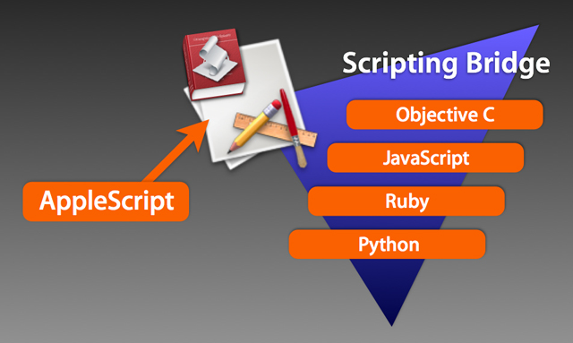

Scripting Bridge
AppleScript is an English-like language interface to the Apple Event messaging architecture of Mac OS X. AppleScript scripts, when executed, are translated by the AppleScript frameworks into Apple Events used to query and control "scriptable" applications.
For years, developers and solution providers have sought an easy way to include similar abilities within other common programming languages. Mac OS X v.10.5 includes a new framework called Scripting Bridge that enables common languages, such as Ruby, Python, and Objective-C, to easily send Apple Events to scriptable applications.
Detailed information for developers wanting to take advantage of the new Scripting Bridge frameworks is available here.

“Scriptable” applications in Mac OS X v.10.5 (those with a built-in Apple Events dictionary) can be queried and controlled directly by AppleScript, or by a variety of other programing languages using the new Scripting Bridge frameworks.
Examples
Here are examples of how a variety of languages can be used to get the name of the current track playing in the iTunes application:
AppleScript
AppleScript is the native scripting language of Mac OS and does not require the Scripting Bridge frameworks. AppleScript scripts written in the Script Editor application use the default Mac OS X scripting architecture and require no special coding to execute:
tell application "iTunes" to get the name of the current track
Ruby
Ruby can be used with the Scripting Bridge frameworks to query and control scriptable applications.
#!/usr/bin/ruby
require "osx/cocoa"
include OSX
OSX.require_framework 'ScriptingBridge'
iTunes = OSX::SBApplication.applicationWithBundleIdentifier_("com.apple.iTunes")
puts iTunes.currentTrack.name
Python
Python can be used with the Scripting Bridge frameworks to query and control scriptable applications.
#!/usr/bin/python
from Foundation import *
from ScriptingBridge import *
iTunes = SBApplication.applicationWithBundleIdentifier_("com.apple.iTunes")
print iTunes.currentTrack().name()
Objective-C
Although the Objective-C language has existing mechanisms for sending Apple Events, the new Scripting Bridge architecture greatly simplifies the coding necessary to query and control scriptable applications.
#import <Foundation/Foundation.h>
#import <ScriptingBridge/ScriptingBridge.h>
#import "iTunes.h"
int main()
{
iTunesApplication *iTunes = [SBApplication applicationWithBundleIdentifier:@"com.apple.iTunes"];
NSLog(iTunes.currentTrack.name);
}